| |
TPR's Scandinavia Trip
Copenhagen Sommerland Sjaelland Bakken Tivoli Gardens Bon Bon Land
Hansa Park
Legoland Billund
Djurs Sommerland
Tivoli Friheden Farup Sommerland Tusenfryd Liseberg Skara Sommerland Grona Lund Power Park Sarkanemmi Linnemaki
All right. Onto our next park, and of course, along the way, we were greeted to the entertainment from Ross, who made this the funniest and filthiest bus ever on a trip. Why? Well...let's just say that there's a reason I called it the C*nt Bus and leave it at that. =)
 Yep, we're at Legoland Billund today. After really enjoying the Legoland California, I was looking foreword to visiting Legoland Billund in Denmark.
Yep, we're at Legoland Billund today. After really enjoying the Legoland California, I was looking foreword to visiting Legoland Billund in Denmark.
"Excuse me, but I'm looking for the out-of-town weirdos. They're the ones who aren't made of legos."
Joe is so desperate that he's stooped down to the level of Lego Clowns for some love.
Never thought I'd be seeing any statues not made from legos today.
"Now I know that Legoland Billund is intended for a younger audience, but I know deep inside, you're all the right demographic for this park."
Ooh!! Pretty!!!
 And of course, we had to start out with ERT on their star attraction. Polar X-Plorer.
And of course, we had to start out with ERT on their star attraction. Polar X-Plorer.
EXCITEMENT EVERYONE!!!
Aww, looks like Polar X-Plorer is not a POV-Friendly coaster.
While that may be true during normal park operating hours, it was POV-Friendly during ERT. I love the flexibility in Europe and not the hardass rules in America where they never make exceptions and there is no way in hell you will ever get a POV. Love that they change the rules based on who the clientelle is. =)
But enough about that. How was Polar X-Plorer as a coaster?
Honestly, this ride kicked ass!! Not in the typical insanely intense way, but this is easily one of the best family coasters ever built.
It's just a really fun, enjoyable, re-rideable coaster.
 I knew about this surprise before I rode it, but just in case you want to be surprised, just be known that something cool happens here.
I knew about this surprise before I rode it, but just in case you want to be surprised, just be known that something cool happens here.
After the fun roller coaster section, it just cruises through an outdoor dark ride section where you see lego animals.
 Drop the lego bacon. The lego wolves are onto us.
Drop the lego bacon. The lego wolves are onto us.
"We made it to the North Pole!!!" (Hey, it's not THAT far from here).
Parents in America would not be happy about this dudes ass hanging out around the park.
All right. Now let's get first rides on Legoland's newest ride. Ghost.
Having kids play with legos while waiting in line = Genius Idea.
 "Ahh!!! Lego Frankenstein!!! Burn it with fire!!!"
"Ahh!!! Lego Frankenstein!!! Burn it with fire!!!"
Disney does not approve of the magic lego lamp.
After going through a really cool mirror maze, you ride the ride, which is an interestingly themed drop tower/frog hopper.
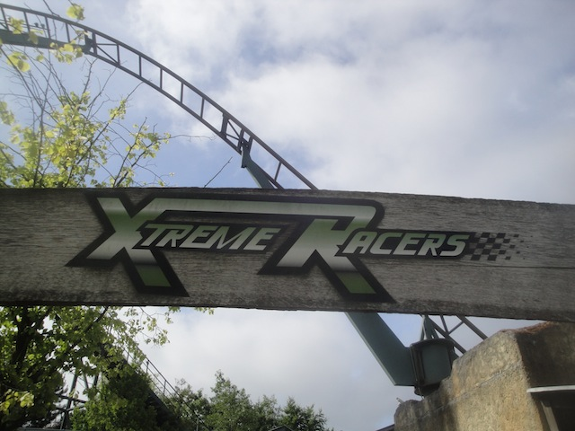
All right. Moving on with the credits, now we're onto Xtreme Racers.
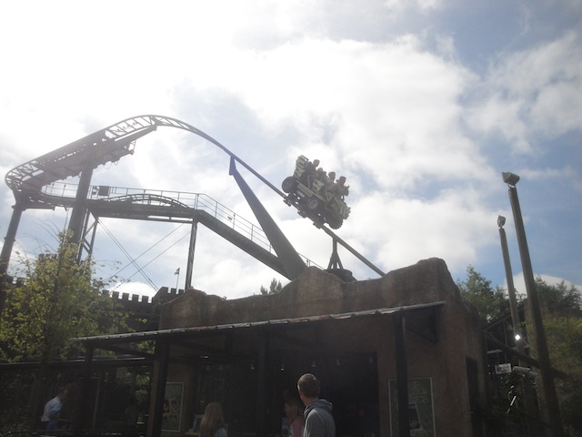
It's basically the same big Wild Mouse they have at all the other Legoland Parks.
 I'm not sure what it is about these rides that are just a ton of fun.
I'm not sure what it is about these rides that are just a ton of fun.
 All right. Now we're onto the Dragon.
All right. Now we're onto the Dragon.
"Looking for me?"
Legoland Billund seems to be infested with lego reptiles today.
FALL!!! FALL!!! FALL!!!
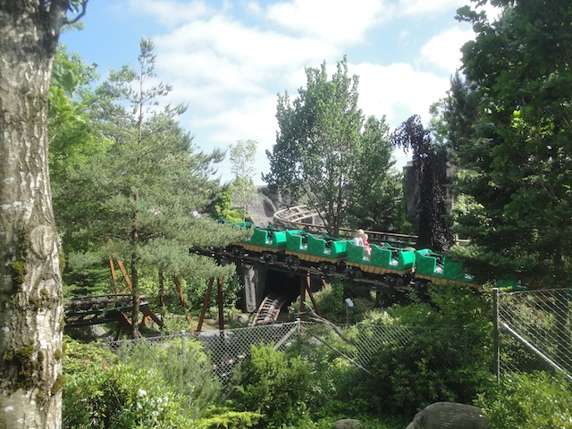
Unfortunetly, the Dragon here is powered. So this one doesn't count as a credit. =(
 Hey, it still works well for the park.
Hey, it still works well for the park.
All right. Time to check out their Shooting Dark Ride.
 It was really good and all, I just wish that I didn't suck so bad at these things.
It was really good and all, I just wish that I didn't suck so bad at these things.
 Now let's move onto their real star attraction (You were thinking it was Polar X-plorer? That's cute).
Now let's move onto their real star attraction (You were thinking it was Polar X-plorer? That's cute).
Just like the Robot Arm at Legoland CA, you can choose the intensity between Levels 1-5.
But not only that, but this one lets you freaking control just how it's gonna flip (with limitations). If it wasn't for said limitations, I'd make this thing go so crazy that the other people on this tour would be puking all over the exits. =)
 Well, it's still an amazing flat ride and I still managed to design it so we flipped a LOT.
Well, it's still an amazing flat ride and I still managed to design it so we flipped a LOT.
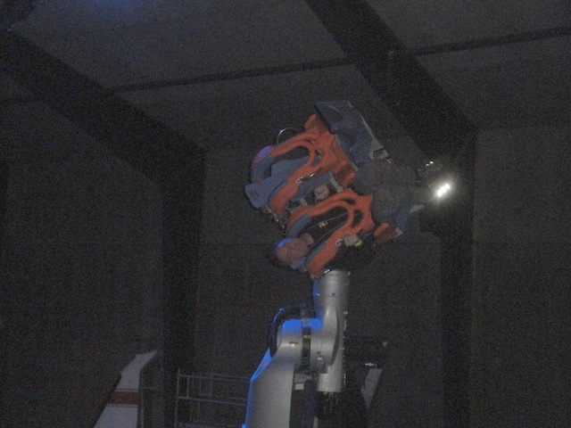
We need more Robot Arms in this world.
All right. Time for our group lunch at the Family Buffet.
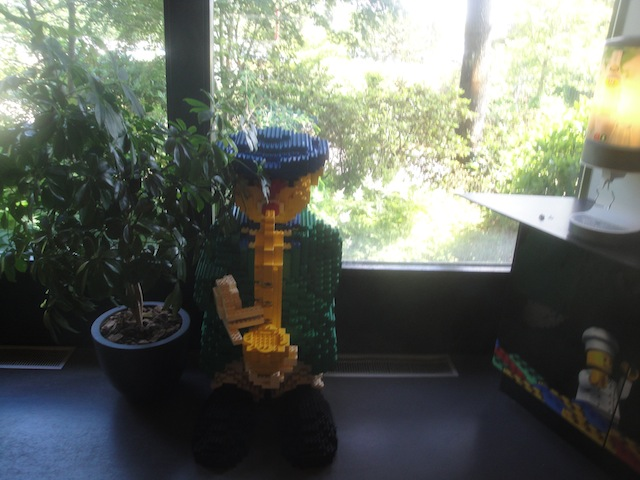
Lego dude on the Saxaphone > Most popular musicians today.
 While visually impressive with lego fries, the meal here was not one of the better ones of the trip.
While visually impressive with lego fries, the meal here was not one of the better ones of the trip.
But hey. At least I get to have all this ice cream.
And of course, you can't have a Legoland without a Miniland. So let's go and check that out.
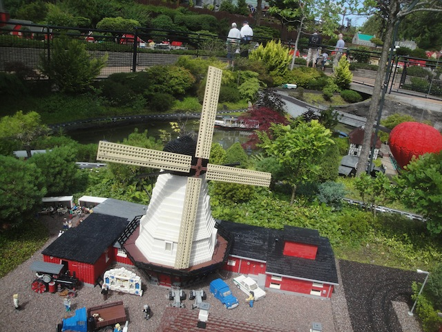
Yeah. You can tell that this is the European Miniland.
See what can be accomplished when lobbyists aren't running the country America? =)
I may not be able to point out famous places here (I'm sorry for being a crappy Dane), but I still really like all the lego recreations
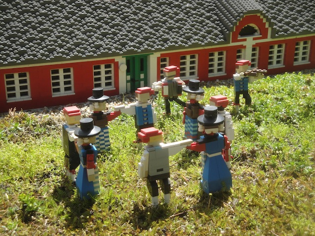
Just another typical day in Danish Legoland.
Yeah. I can safely say that that's pretty Danish right there.
Sorry. I don't have much else to say other than it's pretty and I like it.
Hey, we've moved on from Denmark and into Chinatown.
Lego Hollywood, much like real Hollywood, is full of sh*t.
 Ooh. Lego version of a famous Copenhagen sight I just recently saw.
Ooh. Lego version of a famous Copenhagen sight I just recently saw.
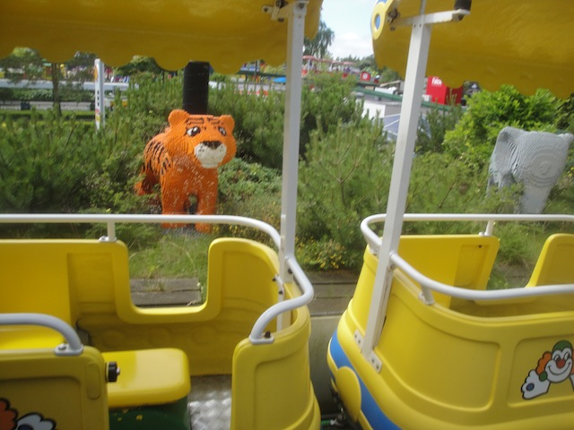
All right. Let's hop on the Lego Monrail for an ariel view of Miniland.
Ooh. Look at the pretty castle.
And of course, they had to add in Miniland Star Wars.
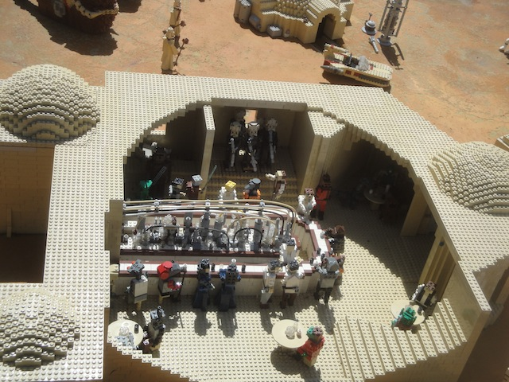
Yes, they do in fact, play the classic Cantina Band Song here. =)
Just in case you ever get bored, feel free to play some Nintendo.
More little touches you can find in any Legoland Park.
Fun fact. Is the American Tourist in front of the camera or behind it?
"Hows it going!! We're on a boat!!"
Now that lethal injection drugs are harder to find, folks are moving back to more (visibly) barbaric methods of execution, including being fed to crocodiles. =)
Yep. Legoland Billund has their very own knock off of Pirates of the Carribean.
 ♫ Yo-Ho Yo-Ho. A lego's lifes for me. ♫
♫ Yo-Ho Yo-Ho. A lego's lifes for me. ♫
If you need someone to yell at your clientele to "SIT DOWN!!!!", I'm your man.
A common staple at the Legolands is the Fire Academy rides, but for some reason, I didn't do it at Legoland California, so this was my first one.
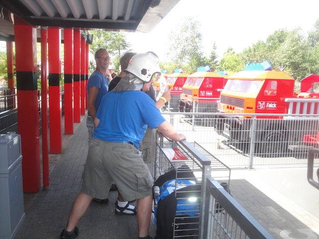
Needless to say, I sucked. Sorry everyone who hates me for making them lose.
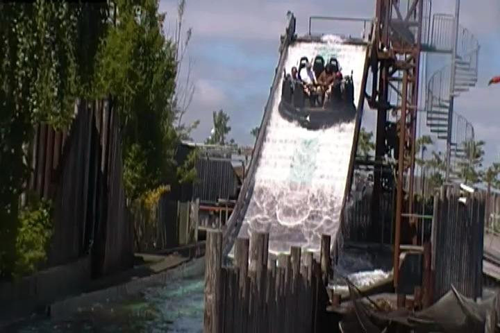
Another one of the really cool attractions that they have at Legoland Billund is their rapids ride with the elevator lift.
Yes, it is awesome, and yes. It does get you wet (as demonstrated by Caesar).
Looks like George Washington has finally gotten the Q-Tip out of his ear.
Come on everyone!! Let's gather round the open flame!!
Best food we will be eating on the entire trip. =)
"Please put your camera away when our fish get drunk. Thank you."
"Best part of the Sea-Life Aquarium here? It's free with admission. SWEET!!!"
"Oh dear. It looks like we've got a severe case of Decompression Sickness here."
"Sweet!!! They also have a Water Whip here. Love those things."
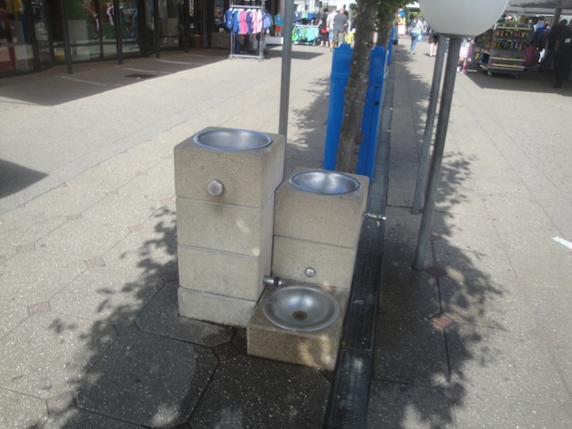
I FOUND A WATER FOUNTAIN!!! No seriously, this is the first water fountain I saw on the entire trip!!! I really stand by my previous statements about Europe needing more water fountains. And that was Southern Europe where they may not have been as commonplace as in the U.S, but at least they existed!!! Here in Northern Europe, they're DAMN NEAR IMPOSSIBLE to find. Thank god it's not nearly as hot here as it was in Italy or else we would've had some problems.
"There's a Blockbuster...and it's open for buisness? IT WORKED!!! MY TIME MACHINE OFFICIALLY WORKS!!!!" =)
And yeah, it's just another quiet night in Aarhus for us. Nothing special, just McDonalds.
Djurs Sommerland
Home
|
{kind=link}